Part One: Getting started
What the notebooks are
OnTrial makes two notebooks for civil litigators. Each one is a single fillable PDF that works like a paper trial binder: tabs down the side, a page for everything, and room to write. Because it is a PDF, it runs in apps you already have, and what you type stays on your own device.
- The OnTrial Notebook organizes a trial from the day it is set to the closing argument: checklists, proof charts, witness outlines, exhibit lists, deposition designations, examination scripts, the objections table, jury pages, a live trial log, and closing pages. It comes in two editions, Standard and Professional.
- The OnTrial Hearing Notebook is built for a motion or evidentiary hearing: a one-page Speaking Outline you argue from, a Preparation Outline behind each point, the facts and authorities behind each point, a Rebuttal page, the record, and a place for copies of cases and papers.
| Standard | Professional | |
|---|---|---|
| Rules | Federal Rules of Evidence and Civil Procedure, with a blank for your state's rule beside each | The same, with your state's rules filled in; more states can be added, each as its own State Rules section |
| Witnesses | 10 | 20 |
| Claims (proof charts) | 6 | 10, plus a Defenses Dashboard and 10 defense charts |
| Exhibits (ours / adverse) | 85 / 51 | 170 / 102 |
| Trial days (day plans / log pages) | 5 / 8 | 10 / 16 |
| Deposition designation pages | 3 | 6 |
| Jury panel tracker pages | 3 | 5 |
| Print buttons on list pages | No | Yes |
| Add your own pages | No (the pages are locked so the notebook stays in order) | Yes, at the end of the notebook |
| Hearing Notebook | Sold separately | Included |
Everything else in this manual applies to both editions. Where a feature is in the Professional edition only, the manual says so.
What you need: the right app on each device
| Device | Use | Do not use |
|---|---|---|
| iPad | PDF Viewer by Nutrient (from the App Store) | Acrobat Reader for iPad, Apple Books, or the Files app's preview. They show the pages but do not run all of the notebook's buttons. |
| Mac or Windows computer, desktop or laptop | Adobe Acrobat Reader (free from Adobe) | Apple Preview, Microsoft Edge, or any web browser. |
- Build each case copy on your computer in Acrobat Reader, where typing is fastest.
- In court, use the iPad in PDF Viewer, or a laptop in Acrobat Reader. On a laptop, use Full Screen Mode (Command-L on a Mac, Ctrl-L on Windows); the arrow keys turn the pages.
- Never save a notebook in Apple Preview. Preview strips out the buttons and scripts, and they do not come back. If that happens, start a new copy from your blank master and copy your entries across.
- Work on one device at a time. If the file is open on your iPad while you save it on your computer, you can end up with two versions. Close it on one device before you open it on the other.
Set up PDF Viewer on the iPad
Do this once, before the first time you take a notebook to court. In PDF Viewer, open a notebook, tap the gear icon, and set:
| Page Transition | Jump |
| Page Mode | Single |
| Scroll Direction | Horizontal |
| Page Fitting | Adaptive |
| Appearance | Default (the white button) |
| JavaScript | On, if your app shows this setting |
With these settings each page shows whole, one at a time, in the right colors. JavaScript runs the bookmarks, the sticky notes, the Admitted Exhibits page and the other buttons that do more than turn to a page; if it is off, those buttons do nothing. After you change the JavaScript setting, close the notebook and open it again.
Tip. In a large notebook, the first button that runs a script after you open the file can take a few seconds. After that, every tap is quick.
Your blank master and your case copies
- Keep the file you receive as your blank master. Do not type in it.
- For each case, make a copy (in Acrobat Reader: File, Save As) and give it the case name. That copy is your case copy. Your license lets you make as many case copies as you need for your own matters.
- Build the case copy on your computer, where typing is fastest. Then move it to the iPad (by AirDrop, iCloud Drive, Dropbox, or email to yourself) and open it in PDF Viewer.
- Back up your case copies the way you back up any client file.
The Standard edition is set so that PDF apps that honor its permissions will not add, remove or move pages; if its page count changes, it shows the Modified copy notice. In the Professional edition you can add pages in your PDF app. Add a blank page (a copied notebook page shares its boxes with the original, so typing on one changes both), and add it at the end of the notebook: a page inserted in the middle shifts the page numbers that the Print buttons, your bookmarks and the printed page references rely on.
Typing, lists, check boxes and dictation
- Type once. Many boxes appear in more than one place under the same name, and they fill each other. Type the case name in the CASE box at the top right of any page and it fills every page and the title page. A witness name typed on the Roster fills that witness's Profile, Direct and Cross pages.
- Lists. Some boxes are drop-down lists (side, strength, ruling, status and the like). Tap the box and pick a choice.
- Check boxes. Tap anywhere in the cell to tick or untick.
- The yellow tint. PDF Viewer tints a box yellow while you type in it. That is the app showing you where you are typing; the tint goes away when you leave the box.
- Dictation. Tap a text box and speak instead of typing. On the iPad, tap the microphone key on the keyboard (turn it on in Settings, General, Keyboard, Enable Dictation). On a Mac, press the Fn (globe) key twice, or choose Edit, Start Dictation. In Windows, press the Windows key and H. Depending on your device and settings, Apple or Microsoft may process dictation on its own servers. To check, turn on Airplane Mode and dictate: if it still works, your words stay on the device.
- Long entries. In the large boxes (witness profiles, daily plans, case summary, opening, closing, logistics, and the Hearing Notebook's relief, roadmap and closing boxes), the text shrinks to fit as you type, so everything shows and prints. Table cells and other small boxes keep a fixed size and scroll; keep those entries short, because text past the edge of a small box does not print.
Printing a backup copy
Keep a printed copy of your case copy in your trial bag, in case a laptop or iPad fails in the courtroom. Print it the night before trial, and print the pages that change, such as the exhibit lists and the trial log, as the trial goes on.
| Where | How |
|---|---|
| Acrobat Reader (Mac or Windows) | File, Print. Pages: All (or the pages you want). Page Sizing: Fit (or Actual size on 11 x 17 paper). Orientation: Landscape. Under Comments & Forms, choose Document and Markups so everything you typed prints. |
| PDF Viewer on the iPad | Tap Share, then Print (AirPrint). Each page is fitted to the paper. |
| Professional edition | The Print button at the foot of a list page prints just that list, all its pages: the exhibit lists, the trial log and the rest. See Print buttons. |
Paper size. A notebook page is a wide 15 by 8.5 inches, so it prints smaller on ordinary paper:
| Paper (landscape) | Prints at about | Notes |
|---|---|---|
| Letter, 8.5 x 11 | 70% | Readable but small |
| Legal, 8.5 x 14 | 90% | Good |
| Tabloid, 11 x 17 | 100% | Actual size; needs an 11 x 17 printer or a print shop |
What prints. Everything you typed, the check boxes and lists, the sticky notes you have shown, the tabs and page numbers. Links do not work on paper; use the page numbers instead. Text in the large boxes prints in full (see Long entries); text past the edge of a small box or table cell does not, so keep those entries short.
The best backup is a second copy of the file. At the end of each trial day, copy your case copy to another device or to cloud storage, so you can pick up on a laptop if the iPad fails, or the other way around. Paper is the last resort.
Part Two: The OnTrial Notebook
Find your way around
Every page has the same frame: a colored band across the top, the tabs down the right edge, and the page number and section at the bottom left. The band's color tells you where you are: navy for Set Up, teal for Build the Case, plum for In Court, and amber for Live and Finish.

- 1The page title, and a one-line note on what the page is for.
- 2BACK and NEXT turn the page.
- 3My Bookmarks: three slots. Tap a slot to go to that page.
- 4The × at the right end of a filled slot removes that bookmark.
- 5The ribbon: tap it to bookmark the page you are on.
- 6The CASE box: type the case name once and it fills every page.
The tabs. The twelve tabs on the right read Home, Guide, Prep, Proof, Wits (witnesses), Depo (depositions), Exh (exhibits), Exam, Jury, Log, Close (closing) and Notes. Each jumps to the first page of its section, and the tab you are in stands out. Home opens the title page, Guide the User Guide, and Notes the first Notes page; from Prep to Close, each tab opens on an index page of big buttons to the pages in that section, each showing its page number.
Bookmarks. Tap the ribbon 5 at the top right to bookmark the page you are on. The page number and a short name go into the first empty slot 3. From any page, tap a slot to go straight to that page. To remove a bookmark, tap the × 4 at the right end of its slot, or go to the page and tap the ribbon again. A fourth bookmark replaces the oldest. In Acrobat the ribbon fills in burgundy on a bookmarked page; PDF Viewer cannot color it, but the slots work the same way.
Start Here. The Start Here page (on the Home tab) lists every section with its page number. Tap a row to go there. It also holds the key dates and courtroom logistics, so the essentials are one tap from the title page.

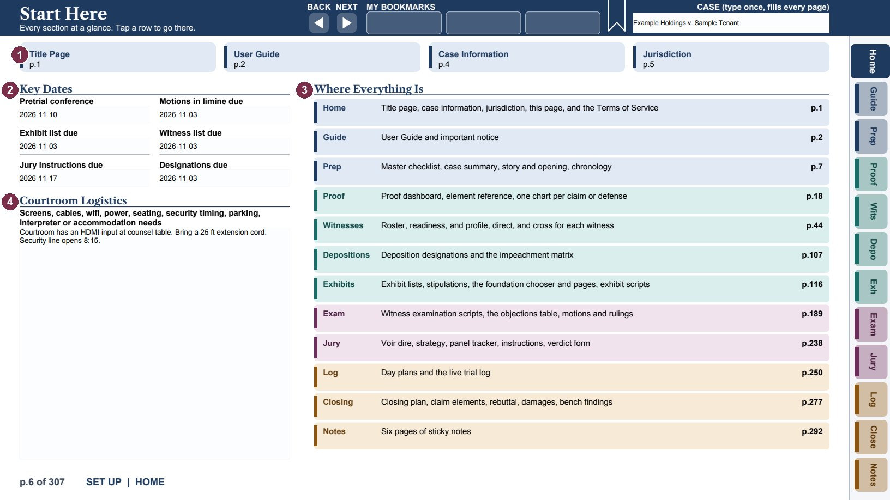
- 1Buttons to the title page, User Guide, Case Information and Jurisdiction.
- 2Key Dates: the same boxes as on the Jurisdiction page, so type them in either place.
- 3Where Everything Is: tap a row to go to that section.
- 4Courtroom Logistics: screens, cables, wifi, parking, interpreters.
The page list. Your PDF app's bookmarks or outline panel lists every page, numbered, by section. It is the quickest way to reach a page you know by name.
Home: title page, case information and jurisdiction

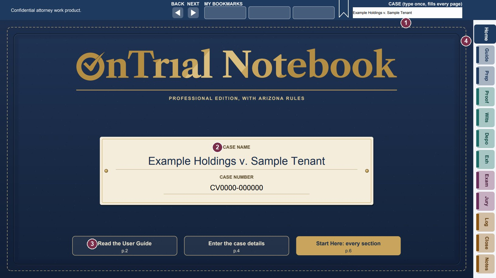
- 1The CASE box fills this label plate and every page.
- 2The case name and number on the label plate. Tap to type here too.
- 3Buttons to the User Guide, Case Information, and Start Here.
- 4The tabs. Home always brings you back to this page.
Case Information holds the client, court, judge and counsel details. Fill it in at the start, along with the Jurisdiction page; the case name and number fill the title page.

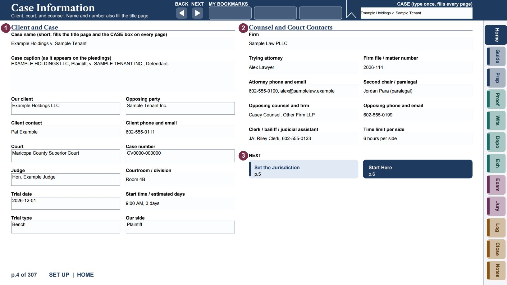
- 1Client and case: name, caption, parties, court, judge, trial date and type.
- 2Counsel and court contacts: your team, opposing counsel, court staff, time limits.
- 3NEXT: buttons to the Jurisdiction page and Start Here.
Jurisdiction. Wherever a page recites a rule, it prints the federal cite and then a blank for your state's rule. The Jurisdiction page is where you record your state's evidence code, civil rules, pretrial order rule, local rules, the judge's standing orders, the strike rule, and the scheduling-order dates. In a Professional edition with state rules, this page and every "Your state" blank are already filled in with that state's rules; check them against the current rules before you rely on them, and type over any line to change it.

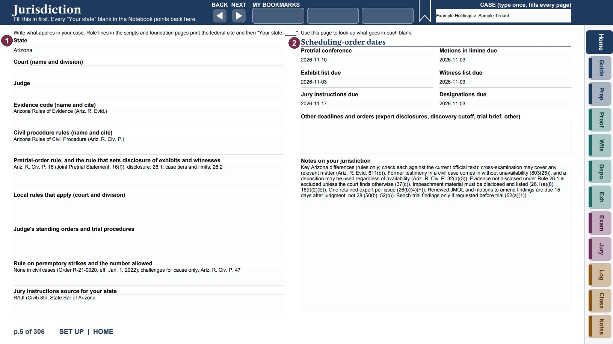
- 1Your state's codes and rules.
- 2Scheduling-order dates. These also appear on Start Here.
"Check your state" questions appear on many scripts and foundation pages. They mark points that may differ where you practice. They are prompts to look the point up, not statements that your state differs.
Prep: checklists, theme and chronology
The Prep tab gets the trial organized. Five checklists run from the day trial is set to the last days before trial; then come the case summary, the opening statement, and the chronology.

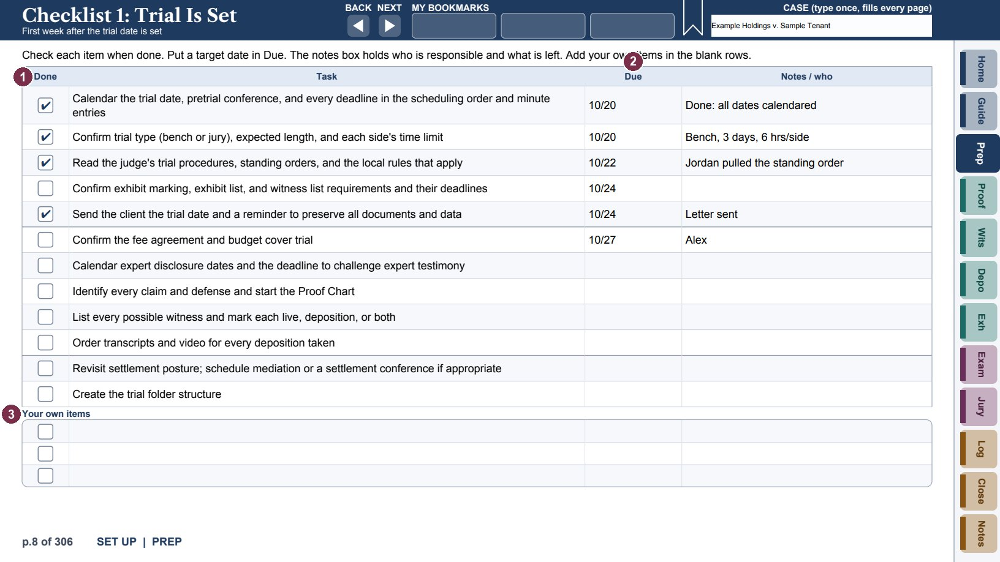
- 1Done: tap anywhere in the cell to tick it.
- 2Due: a target date. The Notes box holds who is responsible and what is left.
- 3Your own items: blank rows for tasks of your own.
Case Summary and Theme asks for the theme in one sentence, the case in five lines, your claims and defenses, the relief, the other side's theory, what you must not lose, and settlement authority. Story and Opening lays out the opening: hook, parties, what happened in order, what the evidence will show, the law in a paragraph, and the ask.

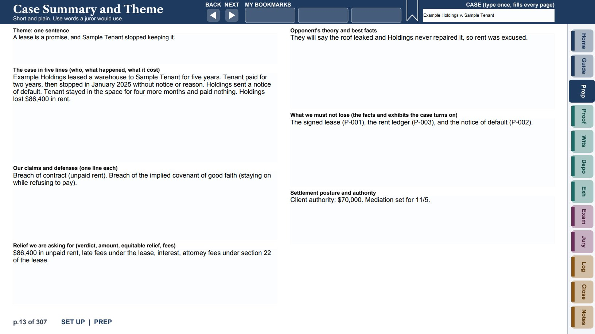
The Chronology (two pages) records every dated event with its source, the witness, and its importance. Keep it in date order; it becomes the spine of your opening and closing.

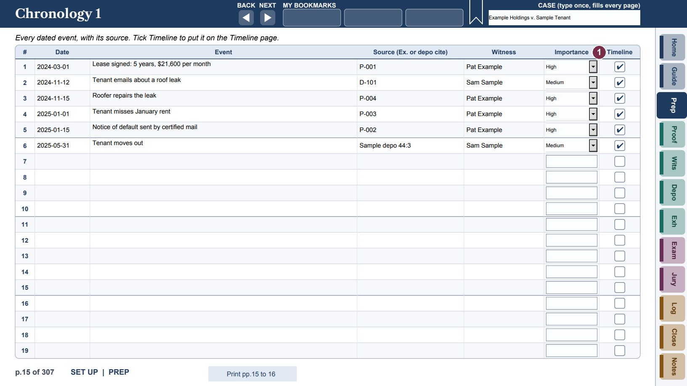
- 1Tick Timeline on the events you want on the Timeline page.
The Timeline, right after the Chronology, shows your key events as a picture: a line across the page with sixteen numbered boxes, alternating above and below it. Tick Timeline on the Chronology rows you want, then tap Fill from Chronology: the ticked events fill the boxes in date order, each with its date, a few words about the event, and its source. Tap it again after you change the Chronology. The boxes are evenly spaced in date order, not to scale, so the words stay readable; text shrinks to fit each box. You can also type straight into any box, which works even with JavaScript off. Fill from Chronology reads dates typed as 3/14/2025, 2025-03-14 or March 14, 2025; a date it cannot read goes last, marked "check date". Clear Timeline empties the boxes. The page prints, so it can serve as a draft of a timeline demonstrative.

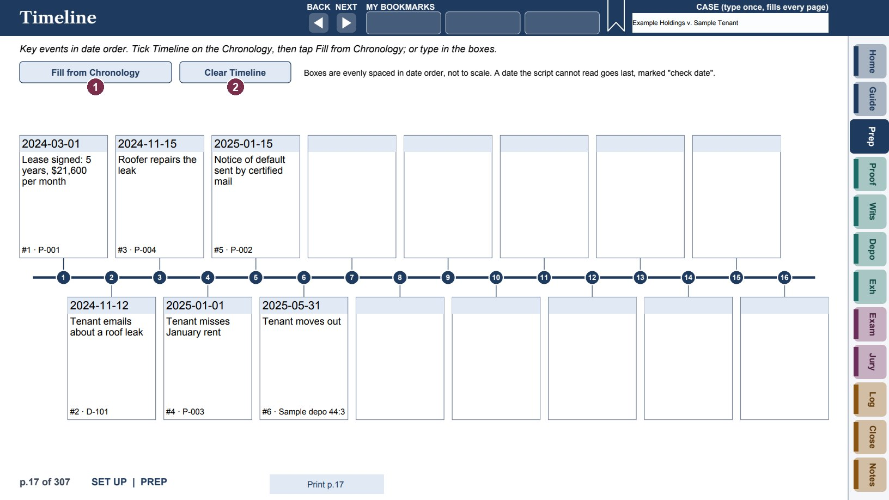
- 1Fill from Chronology places the ticked events in date order.
- 2Clear Timeline empties the boxes.
Proof: the dashboard and the proof charts
The Proof tab maps every element you must prove to the witnesses and exhibits that prove it, so gaps show up early.
- Start with a proof chart for each claim (in the Standard edition, also for any defense). Name the claim, the burden, and the authority or jury instruction. List the elements, one per row. For each element, write the witnesses who prove it, the exhibits, and the deposition cite, then rate it: STRONG, ADEQUATE, WEAK or GAP. Use the last column for the plan to fix a weak element.
- Then fill in the Proof Dashboard: one row per claim (or defense), with the number of elements, how many are GAP or WEAK, the biggest risk, and the plan. The ratings are defined at the top of the page.

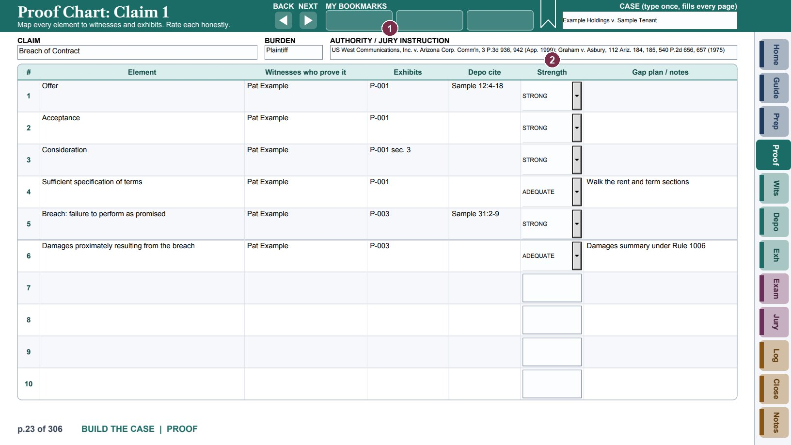
- 1The claim, burden, and authority or jury instruction.
- 2Strength: pick STRONG, ADEQUATE, WEAK or GAP from the list.

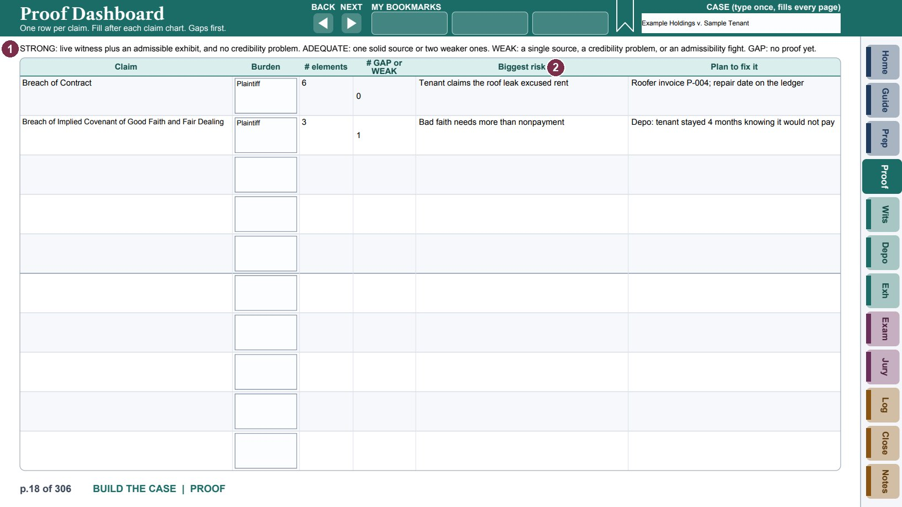
- 1What each rating means.
- 2The biggest risk for each claim, and the plan to fix it.
The Element Reference is a worked example of element sets and authorities for common claims (Arizona examples). Use it as a model, and write the elements for your own state on your proof charts.
Professional edition: a Defenses Dashboard and ten defense charts, laid out like the claim charts, for defenses, yours or theirs.
Witnesses: roster, readiness and outlines
The Roster lists every witness, ours and theirs: role, side, live or by deposition, the day and order, time for direct and cross, subpoena status, and contact. A name typed here fills that witness's three pages.

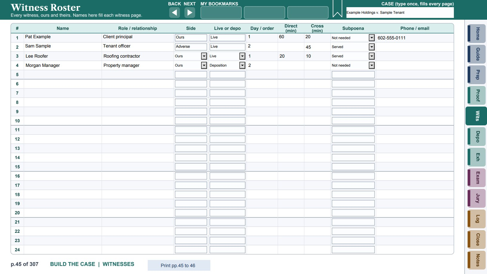
The Readiness Tracker shows, for each witness, whether the subpoena is issued and served, the prep sessions held, exhibits reviewed, the outline done, travel set, and the day-of call made. Blanks under the next trial day are your to-do list.

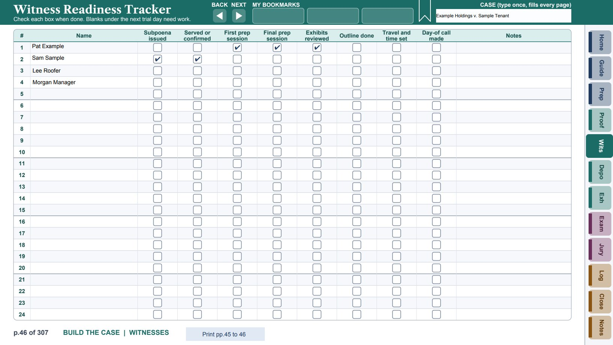
Each witness then has three pages:
- Profile: why you need this witness, the exhibits they sponsor, credibility and prior statements, danger zones, prep sessions, points to save for redirect, and presenter notes.
- Direct Exam Outline: the goal of the examination, then topics with key questions, the exhibit, the source, and a Done box to tick as you cover each topic.
- Cross Exam Outline: chapters with the point to make, the leading questions, the exhibit, and where to impeach from (deposition page and line, or document), plus a Do Not Ask box.

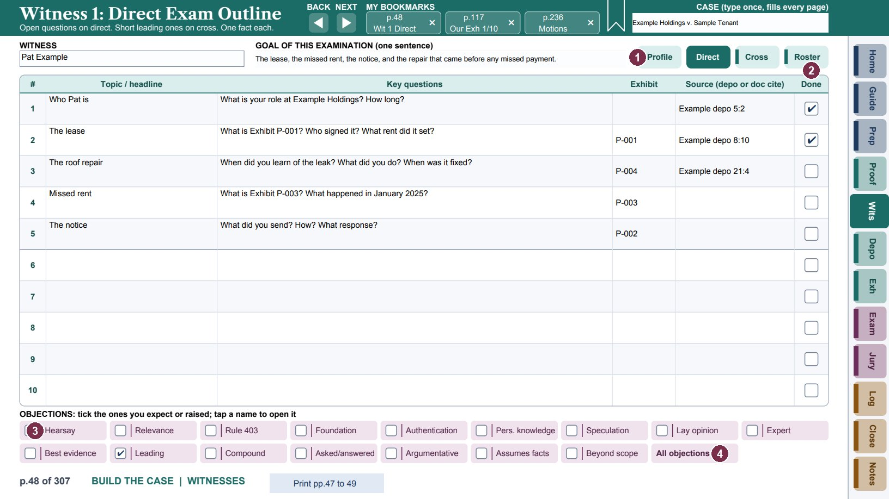
- 1Switch between this witness's Profile, Direct and Cross pages, or go to the Roster.
- 2Done: tick each topic as you cover it.
- 3Objection chips: tick the box at the left of a chip to mark an objection you expect or raised.
- 4Tap a chip's name to open that objection's row on the Objections page. All objections opens the whole table.
Objection chips appear at the foot of the witness outlines, deposition pages, exhibit scripts, motions and rulings pages, and the trial log. The left part of each chip is a check box; the name opens the objection on the Objections page, with its rule and a quick answer. BACK only turns to the previous page, so to get back to where you were, bookmark your page with the ribbon before you tap the chip, then tap its slot.
Depositions: designations and impeachment
Designations pages, one per deponent, record each page:line range, the subject, who designated it, any objection and the ruling, how you will use it (affirmative, counter, impeach, rebuttal), and a Read box to tick once it is read in. Record the ruling before the day you read.

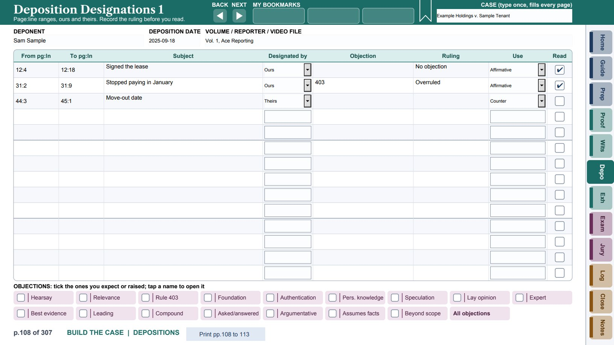
The Impeachment Matrix lines up what a witness said at trial against the earlier statement, word for word, with the source, a Ready box, and a Used box. Commit, credit, confront, and cite page and line every time.

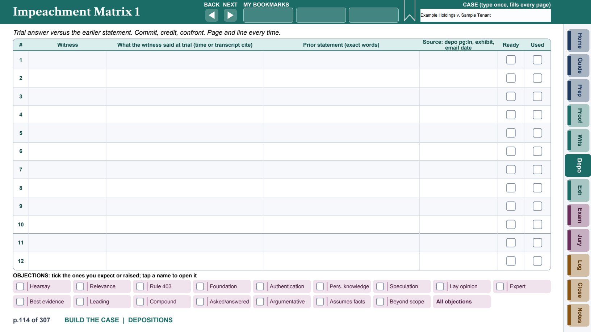
Exhibits: lists, status, foundations and scripts
The Exhibits tab holds your exhibit list and the adverse list, a running list of admitted exhibits, stipulations, and the foundation for every kind of evidence.

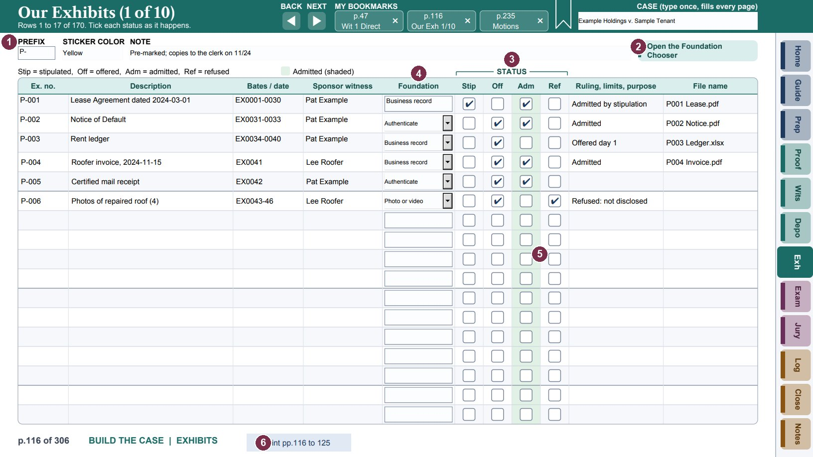
- 1Prefix, sticker color and a note for the whole list (page 1 only).
- 2Open the Foundation Chooser to find the foundation for an exhibit.
- 3Status: tick Stip, Off, Adm or Ref as each happens.
- 4Foundation: pick the kind of foundation from the list.
- 5The Adm column is shaded so admitted exhibits stand out.
- 6Professional edition: Print prints the whole list, all its pages.
- Enter each exhibit on Our Exhibits or Adverse Exhibits: number, description, Bates number or date, sponsoring witness, and foundation. The header shows which rows the page holds (for example, rows 1 to 17 of 85).
- At trial, tick the status as it happens: Stip (stipulated), Off (offered), Adm (admitted), Ref (refused). Note the ruling, any limits, and the purpose.
- Open the Admitted Exhibits page any time to see every exhibit ticked Adm on both lists, with its number and description. It fills itself in each time you open the page; tap Refresh the lists to update it while you are on it. It is read-only: to change it, tick or untick Adm on the lists.

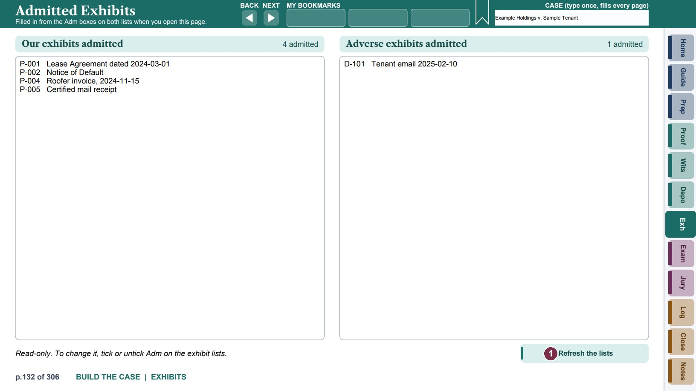
- 1Refresh the lists: update the page while you are on it.
The Stipulations page records every agreement with opposing counsel: the exact terms, the date, how it was made (email, signed, or on the record), and whether it is in writing and has been filed or read in.

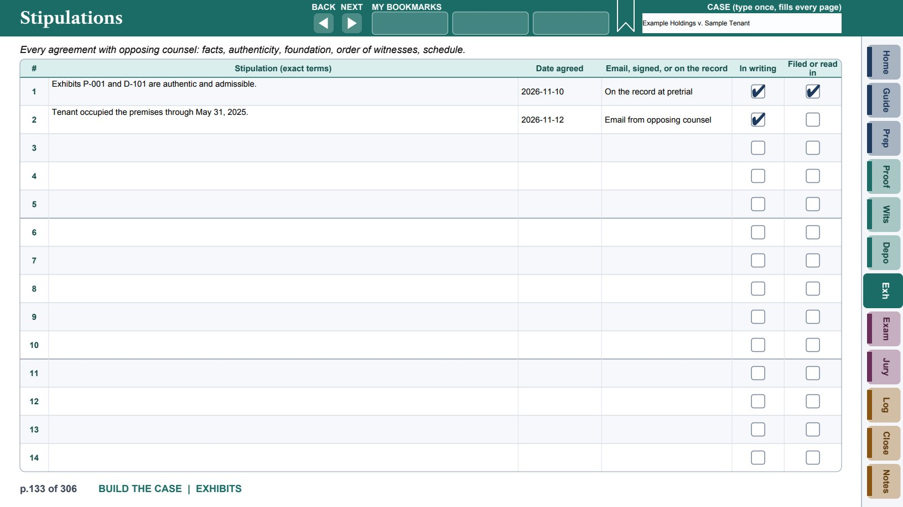
The Foundation Chooser starts with the steps for every exhibit, every time. Below that, find what you are offering, or the problem on the stand, and tap the row to open its page: a foundation page, or, for an expert, a witness problem on the stand, hearsay, objections or stipulations, the script on the Exam tab. Each row shows the authentication rule, the hearsay route, and in the Open column the page (and script number) it opens.

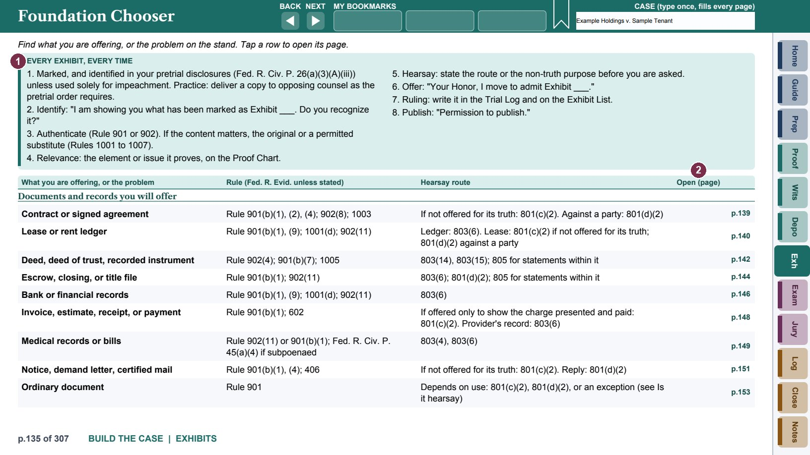
- 1Every exhibit, every time: the steps for any exhibit.
- 2Tap a row to open its page: a foundation page, or a script on the Exam tab.
Each foundation page covers one kind of evidence (a contract, a business record, a photograph, an email, a summary, expert opinion, and many more): the authentication and hearsay rules with boxes for your state's rules, what to say in order, the objections to expect with your answers, "Check your state" questions, and your notes.
Mark each step as you say it. On the foundation pages and the scripts on the Exam tab, tap a numbered step once you have said it: the step fades and a green check covers its number, so the next step stands out. Tap it again to unmark it. Clear checks, in the middle of the footer, clears every step on that page, ready for the next exhibit or witness. Marking a step works even with JavaScript off; Clear checks needs it.

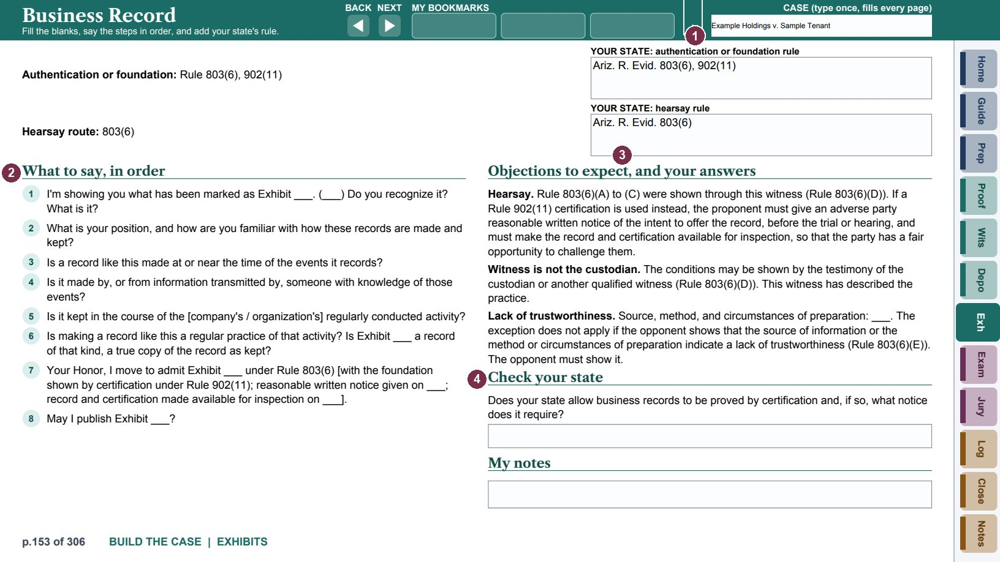
- 1Your state's rule, beside the federal cite (filled in when the edition includes your state).
- 2What to say, in order. Tap a step once you have said it: it fades and gets a check (steps 1 and 2 here).
- 3The objections to expect, and the answer to each.
- 4Check your state: a point that may differ where you practice.
- 5Clear checks clears the marked steps for the next exhibit.
Exhibit scripts are for the exhibits and testimony you must get in. The Exhibit Scripts Index lists them; tap Open page to go to one. Each script page holds the item, description, sponsoring witness, evidence type, purpose and admissibility path; then what you will say and the answer you need, with a Done box for each step; the objections you expect and your response; a fallback if an objection is sustained; and the result and ruling.

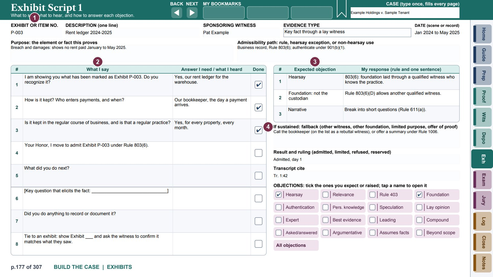
- 1The item, witness, evidence type and date.
- 2What I say, and the answer I need. Tick Done as you go.
- 3Expected objections and your one-sentence response.
- 4If sustained: your fallback.
Exam: scripts, objections, motions and rulings
The Exam tab opens on an index of scripts for examining witnesses, grouped as refreshing recollection, impeachment, experts, then objections, hearsay, stipulations, and bench or jury trial, and other scripts (authentication, business records, photographs, emails, offering an exhibit, depositions at trial, lay opinion, party statements, summaries, public records, offers of proof, and the motion at the close of the opponent's evidence).

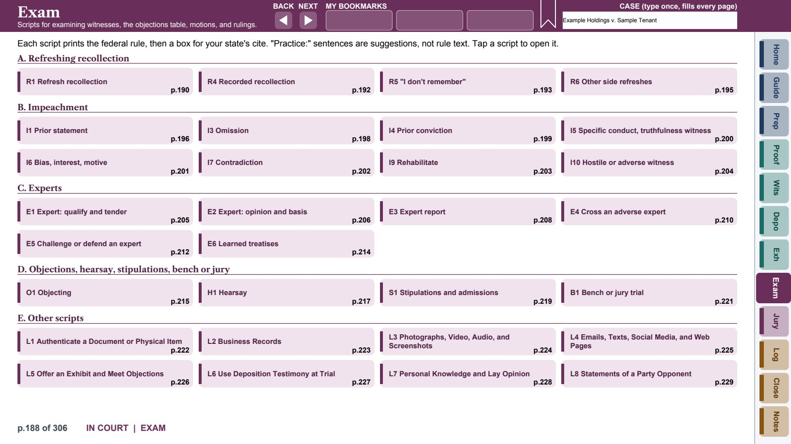
Each script prints the rule, a box for your state's cite, and the steps in order. Steps to take before trial are listed first. In the steps, the words you say aloud to the court or the witness are set apart in color with a bar beside them, so you can find them at a glance. A sentence that starts "Practice:" is a suggestion about practice, not rule text. Tap each numbered step once you have said it, and use Clear checks to start again (see Mark each step).

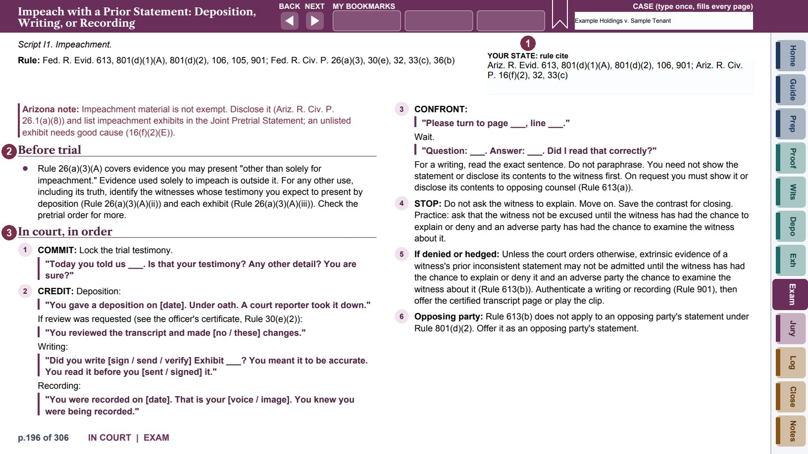
- 1Your state's rule cite.
- 2Before trial: what to do ahead of time.
- 3In court, in order: numbered steps, with the words to say set apart.
The Objections page lists the common objections in rule order, grouped by subject (General, Relevance, Privileges, Witnesses, Questioning, Opinions, Hearsay, Authentication, Contents, and Civil Rules). Each row gives the rule, the objection, a quick answer, a (i) note with the rule text and practice notes, and a box for your notes. Tap a group name to zoom to that group.

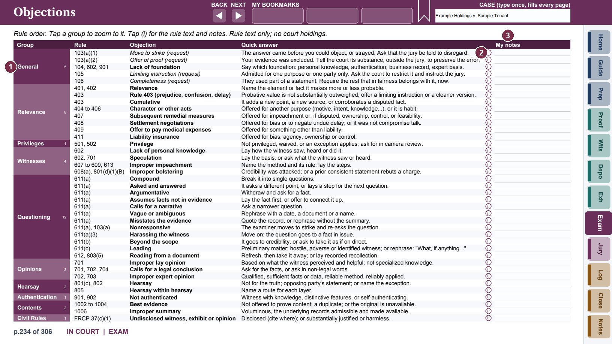
- 1Tap a group to zoom to it.
- 2Tap (i) for the rule text and notes.
- 3My notes: your own answer for each objection.
Motions in Limine and Rulings records every pretrial ruling and the limits it puts on you: the motion, who filed it, the ruling, the date, the terms, the witnesses or exhibits affected, and a Comply box to tick once you have briefed the witness or team. Rulings During Trial records rulings from the bench, sidebars and instructions to counsel, with the time and transcript cite.

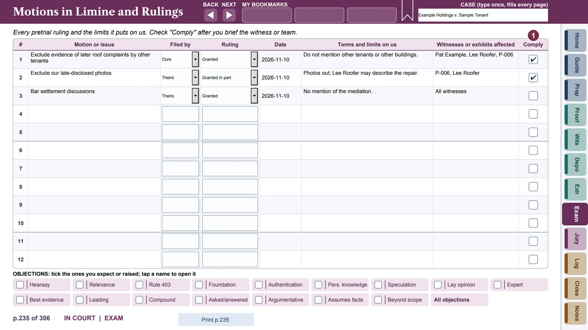
- 1Comply: tick once the witnesses or team know the limits.

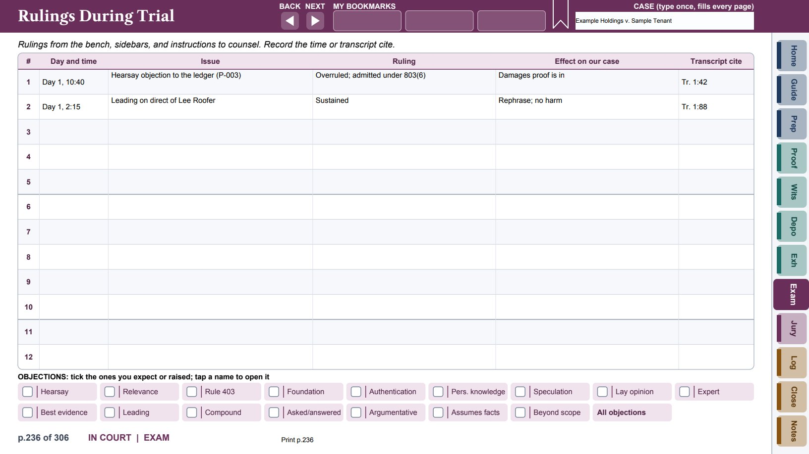
Jury: voir dire, panel, instructions and verdict
The Voir Dire Question Bank groups questions by subject; tick the ones to ask and write the follow-ups. The Jury Selection Strategy page sets out your ideal juror, your most dangerous juror, the questions that reveal each, themes to plant, cause challenges, strikes allowed and used, and any record to make.

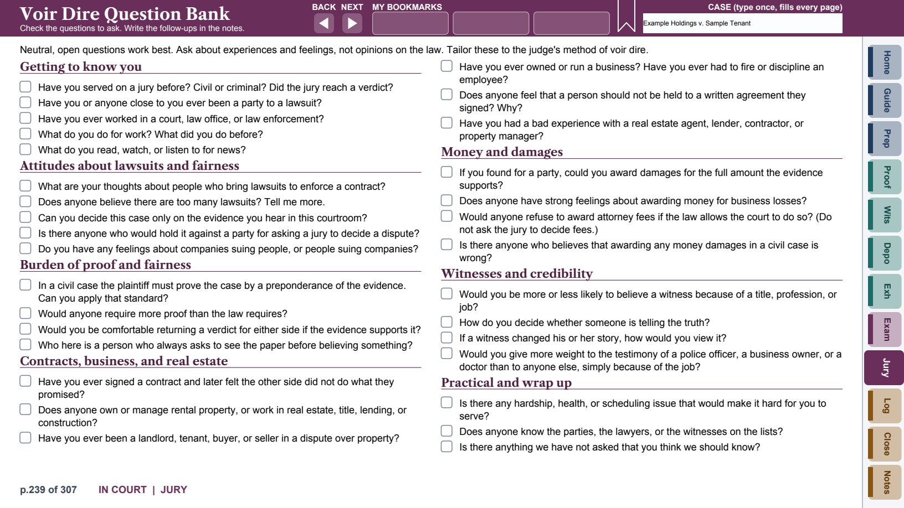
The Panel Tracker pages record each panel member: number, name, occupation, household, answers and body language, a rating from -2 to +2, a cause box, and the result (seated, for cause, our strike, their strike, excused).

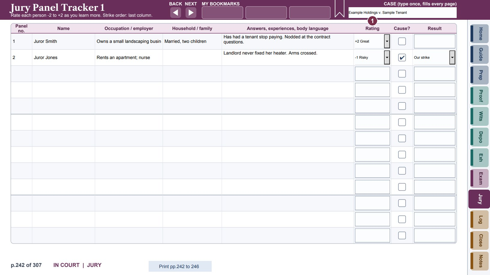
- 1Rating: from +2 (great) to -2 (dangerous), updated as you learn more.
The Instructions pages track every jury instruction (proposed, agreed, disputed, given, refused) with its source and your position, and mark the ones to quote in closing. Verdict Form Notes walks the verdict form question by question: the answer you want, the evidence that supports it, and the risk. It is the road map for your closing.

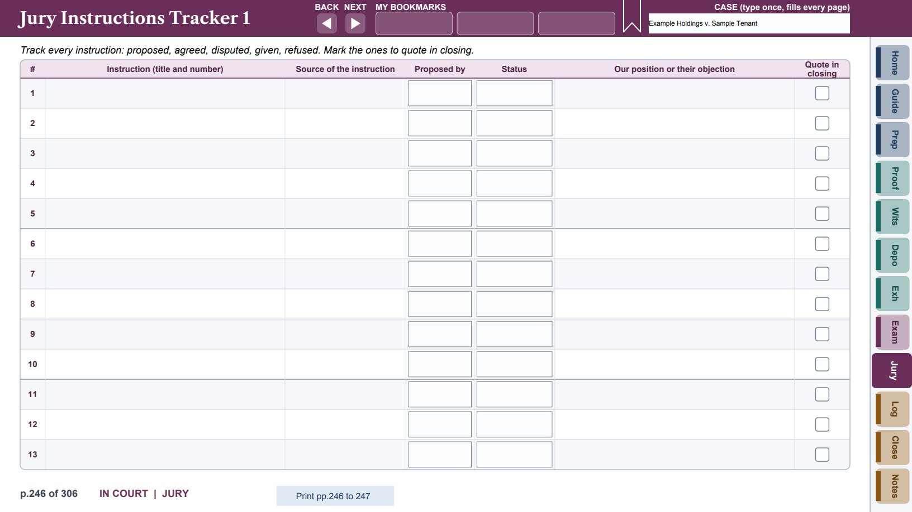
Log: day plans and the trial log
Each Day Plan is filled the night before (witnesses and order, exhibits to offer, motions and issues to raise, the judge's instructions) and finished at the end of the day (what you proved, problems and rulings, fixes for tomorrow, and notes for staff).

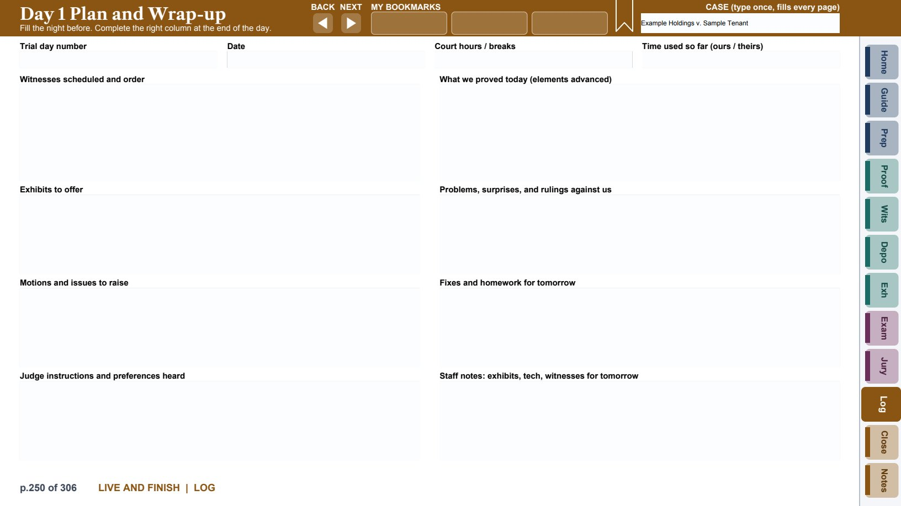
The Trial Log is for capturing the trial in real time: the time, the type of entry (testimony, admission, ruling, objection, exhibit, juror reaction, judge comment, demeanor), the witness, what happened, the exhibit or element, and the transcript cite. Tick the star on anything you want in closing. Keep entries short; the transcript comes later.

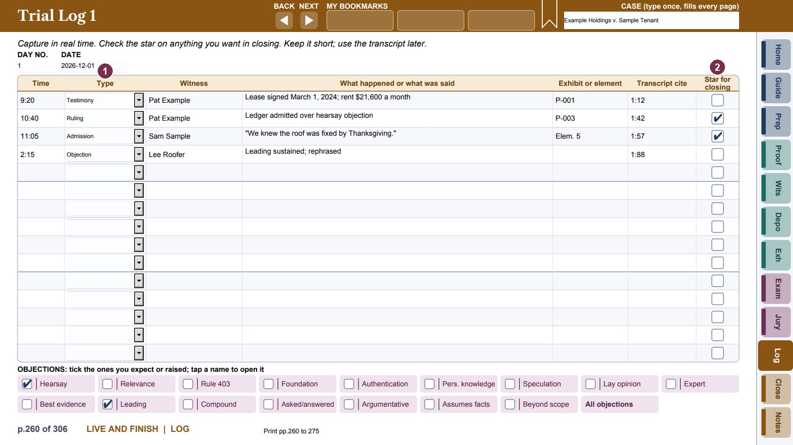
- 1Type: pick the kind of entry from the list.
- 2Star for closing: tick it, and the entry is your closing material.
Closing: plan, elements, rebuttal and damages
The Closing Argument Plan is an eight-step skeleton built from the proof charts and the starred log entries: open with the theme, state what you are asking for, give the road map, walk the elements, credibility, meet their best argument, damages or relief, and return to the theme.

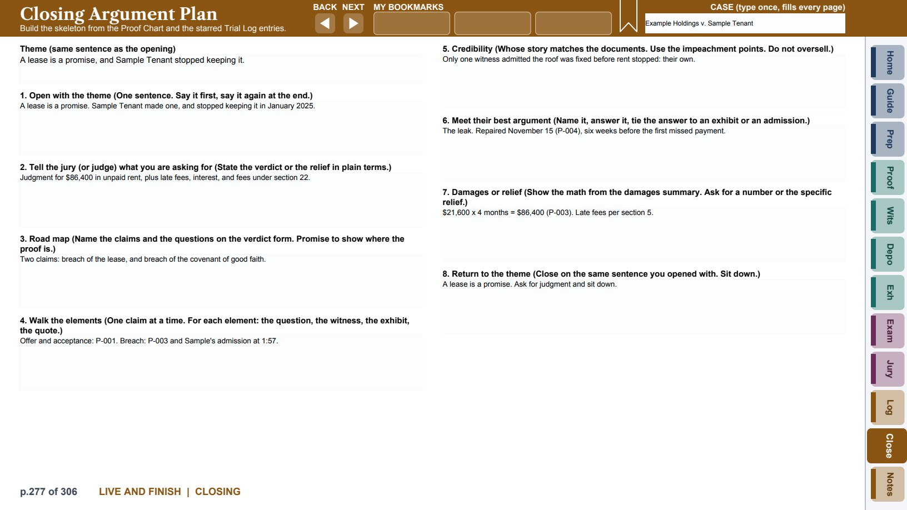
The Claim Elements pages carry each claim's elements over from its proof chart. For each one, write the best proof (testimony, admissions and quotes with cites), the exhibits to show, how you will say it, and tick Done.

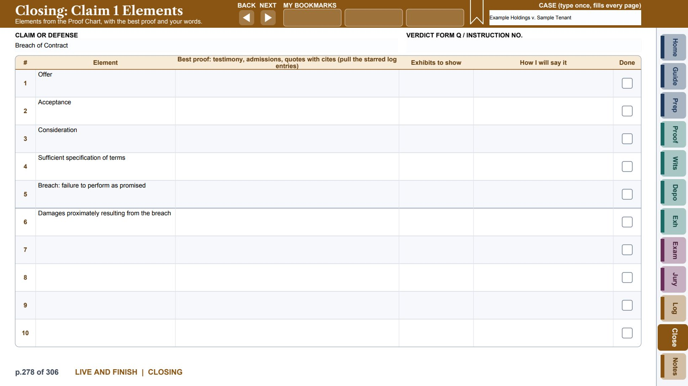
Their Best Arguments and Our Answers pairs each argument with your answer, the evidence and the law. Damages and Relief Summary shows the math: every item, the amount, how it was calculated, and the exhibit or witness, with the total, fees, costs and interest. Bench Trial: Findings and Conclusions drafts the findings of fact and conclusions of law you want, the credibility points, and the relief to request.

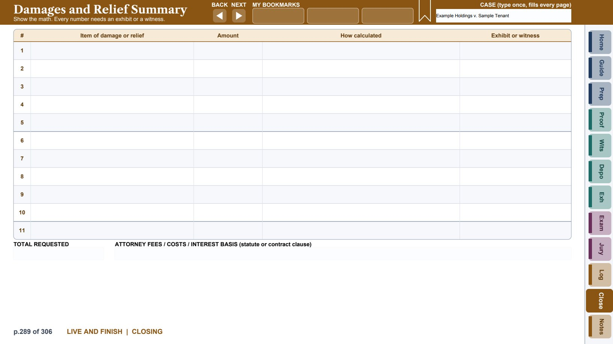
Notes: sticky notes
The Notes tab has six pages of sticky notes, six notes to a page. Type a title on the colored band and the note in the body.

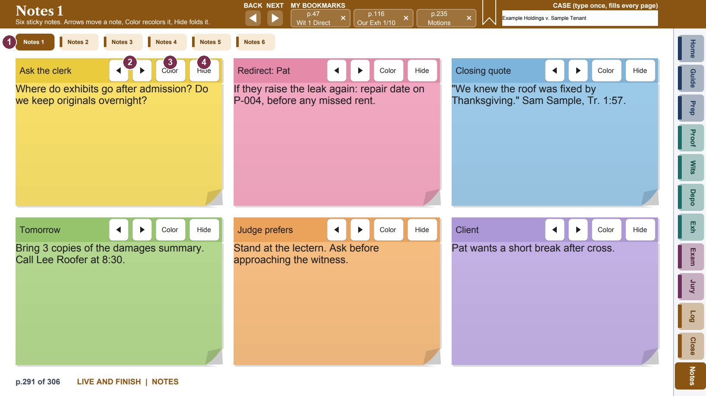
- 1The Notes 1 to Notes 6 buttons switch between the six Notes pages.
- 2The arrows move a note left or right on the page. Its title, text and color move with it.
- 3Color: tap, then pick one of six colors.
- 4Hide folds the note to its title band. Show opens it again.
Professional edition extras
- State rules. A Professional copy can include the rules of one or more states. The first state fills in the Jurisdiction page and every "Your state" blank. Each additional state gets its own State Rules section at the front, with a rule-by-rule comparison to the federal rules.
- Print buttons. These list pages have a Print button at the foot of the page that prints the whole list, all its pages, to paper or to a PDF: the chronology, witness lists, each witness's pages, the exhibit lists, designations, motions, rulings, panel tracker, instructions and trial log.
- More room (see the table in Part One), the Defenses Dashboard and defense charts, and you can add your own pages at the end.
- The Hearing Notebook is included.

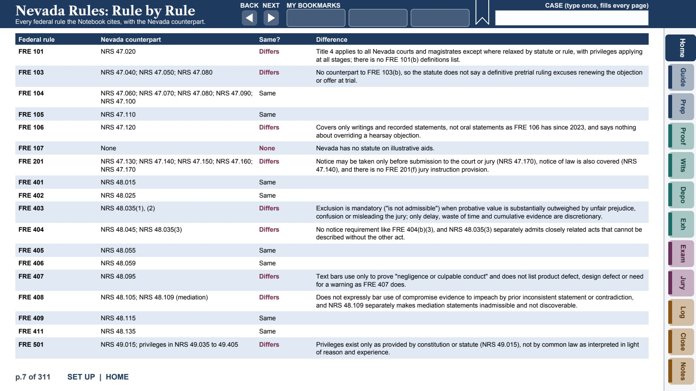
Part Three: The OnTrial Hearing Notebook
How it fits together
The Hearing Notebook is built around one idea: you argue from a single page, and everything behind it is one tap away. Prepare on your computer in this order:
- Case Information: the court, hearing, matter heard, and counsel.
- Preparation Outline: write the opening and close in full, then one page per main point, with its facts and citations.
- Speaking Outline: two or three keywords per point, plus the opening and close as you will say them. This is the page you look at while you argue.
- Sources, Legal Authorities, Rebuttal and The Record: filled in as you build the points.
- Case Copies: copies of the key cases and papers, inserted at the back, so they open without a connection.
The header band, the CASE box, BACK and NEXT, the bookmarks and the sticky notes work exactly as in the OnTrial Notebook (see Part Two). The Hearing Notebook has nine tabs: Home, Guide, Argue (the Speaking Outline, Preparation Outline and Rebuttal), Sources, Law (Legal Authorities), Copies (Case Copies), Record, Prep (the Pre-hearing Checklist) and Notes.

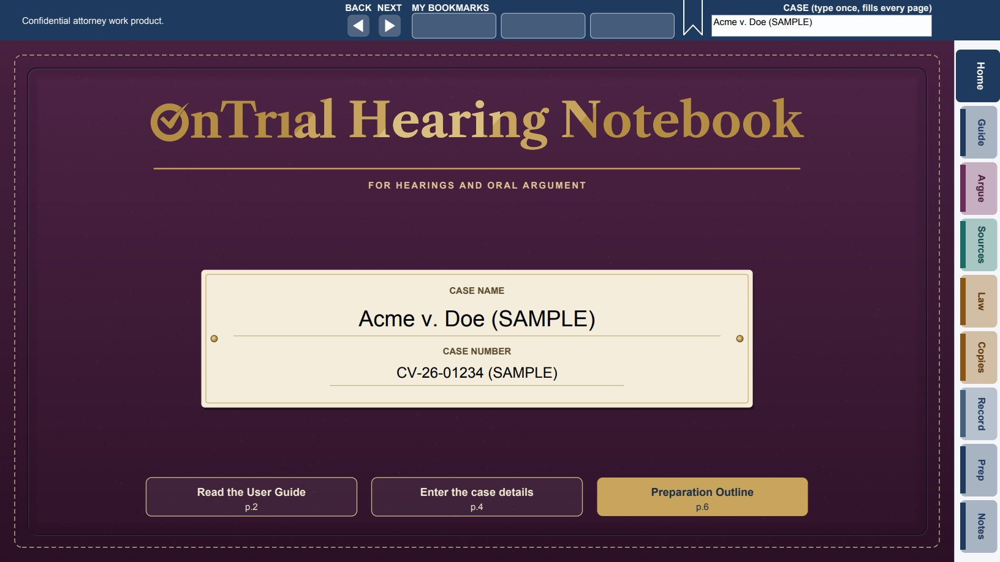
The Speaking Outline
The Speaking Outline is a chalkboard: glance down, say it, look up. It holds your opening, your main points as keywords, and your close.

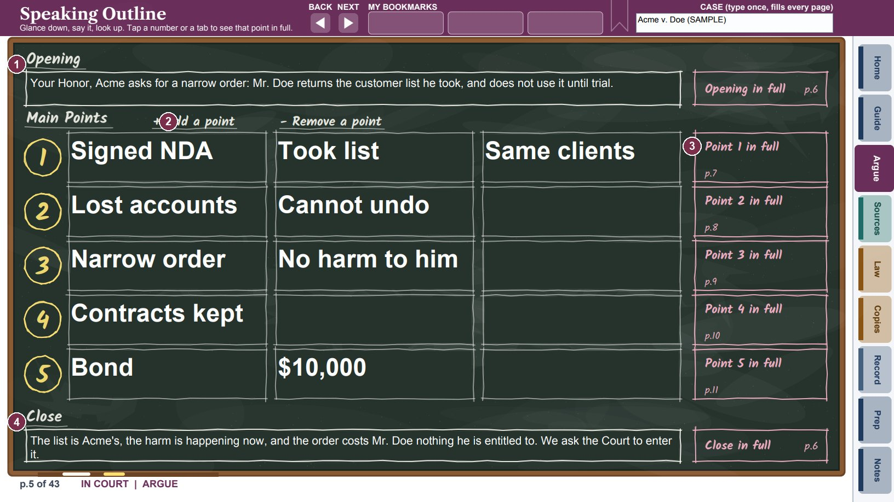
- 1Opening: what you will say first, word for word.
- 2+ Add a point and - Remove a point: three to seven points. The keywords get larger when there are fewer points.
- 3Tap a point's number or its tab on the right to open its Preparation Outline page.
- 4Close: what you will say last.
- Give each point two or three keywords, no more. They are reminders, not sentences.
- The outline opens with four points. Tap + Add a point for up to seven, or - Remove a point for as few as three. The keywords grow or shrink to fill the board.
- When you clear a box, a chalk eraser appears in it. While you type, the text turns dark so you can read it over PDF Viewer's yellow typing tint; it turns back to chalk white when you leave the box.
- Tap a point's number, or its tab, to see that point in full; tap Opening in full or Close in full for those. Every Preparation Outline page has a Back to Speaking Outline button.
The Preparation Outline
Opening and Close holds both in full: the opening as you will say it, the exact relief you ask for, the road map of your points, the close as you will say it, and the close in full with the points to land and the exact ask. The short versions are the same boxes as on the Speaking Outline.

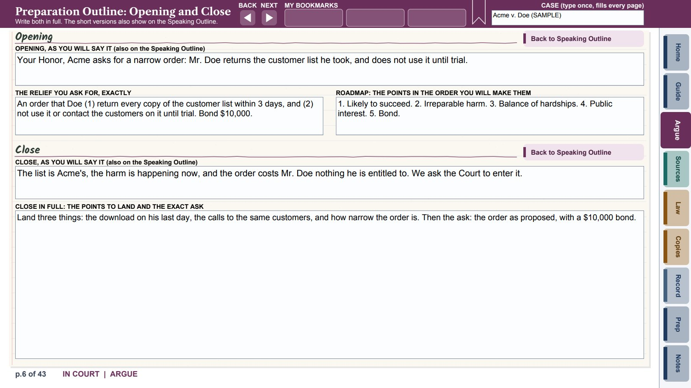
Each point page holds that point's keywords (the same boxes as on the Speaking Outline), the point in full, and up to eight bullets, each a fact or a citation.

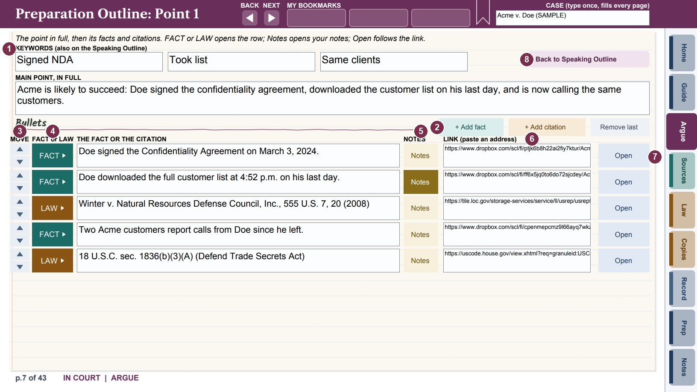
- 1Keywords: the same boxes as the point's keywords on the Speaking Outline.
- 2+ Add fact and + Add citation add a bullet. Remove last asks you to confirm, then takes the last bullet away and clears its row on Sources or Legal Authorities.
- 3The arrows move a bullet up or down.
- 4FACT or LAW opens the bullet's row on the Sources or Legal Authorities page.
- 5Notes opens notes for the bullet that stay hidden until you want them. The tab turns gold when a bullet has a note.
- 6Link: paste an address (Westlaw, Lexis, a docket entry, a Dropbox or iCloud file).
- 7Open follows the link.
- 8Back to Speaking Outline.
- State the point in full, the way you would write it in a brief.
- Tap + Add fact or + Add citation for each bullet, and type the fact or the citation.
- Paste a link if you have one, and tap Open to check it works.
- Tap Notes on a bullet for room to write more about it; tap again to close the notes.
Sources and Legal Authorities
Every fact you add to a point gets a row on that point's Sources page, and every citation a row on its Legal Authorities page, with the same text and link. Add the document and pin cite (for a fact) or the pin cite and what it supports (for an authority), and the page a copy starts on in the Case Copies section. In each row, Go jumps to the copy, Open follows the link, and Back returns to the point.

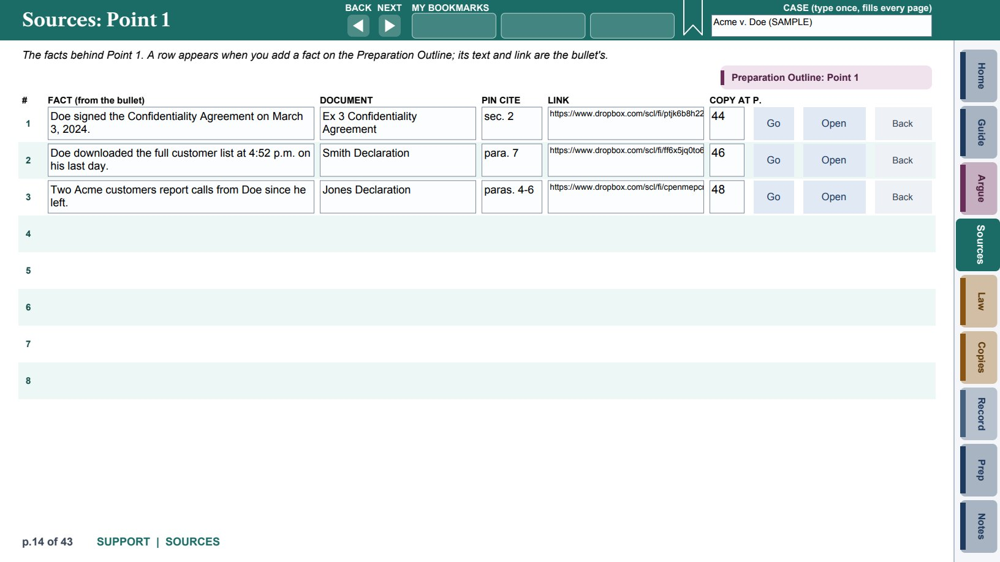

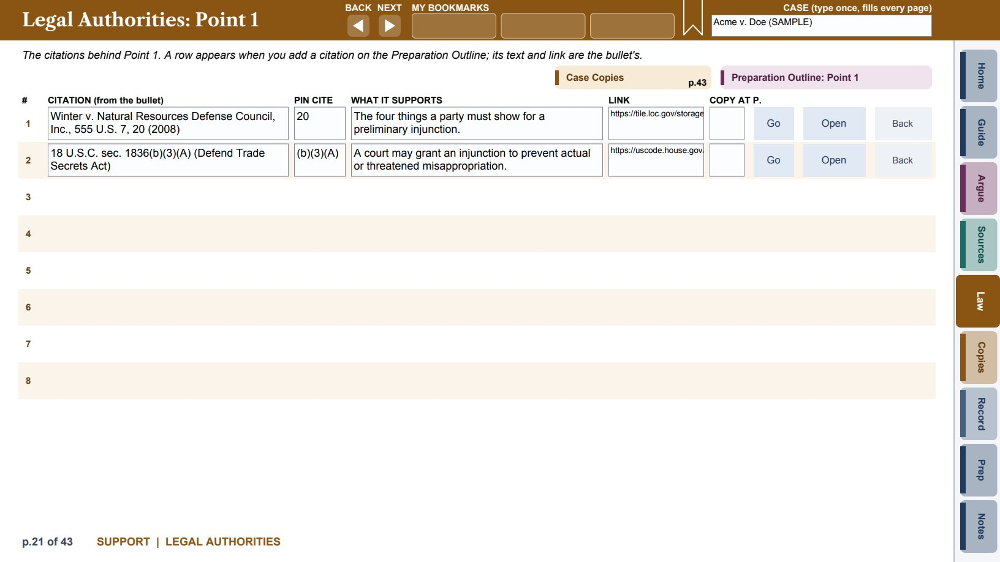
Rebuttal and The Record
On the Rebuttal page, list the counterarguments you expect. When the other side argues one, tick Argued, so you answer it. The rows under Raised at the hearing are for points you did not expect.

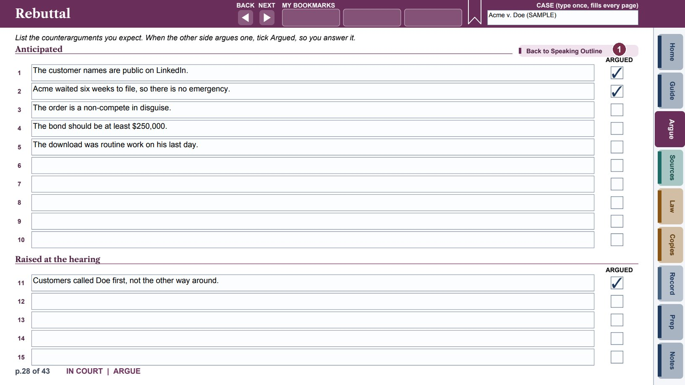
- 1Argued: tick when the other side raises it.
The Record (two pages) lists the orders, motion, response, reply, declarations, exhibits and transcripts: the type, title, who filed it, the date, the docket number, the key pages or paragraphs, the link, and the page its copy starts on, with Go and Open buttons.

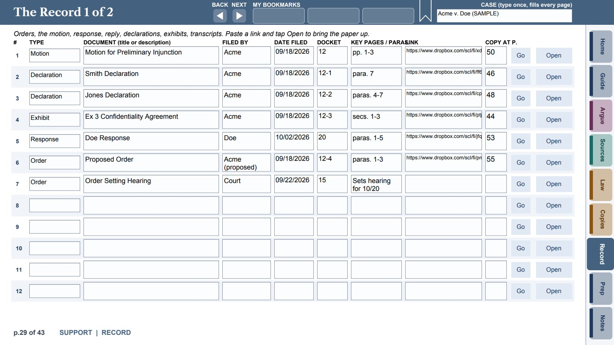
Case Copies
Courthouse wifi fails. A link needs a connection; a copy inside the notebook opens anywhere, at once. The Case Copies page is the last page of the notebook, so copies you add go after it and no page number before it moves.

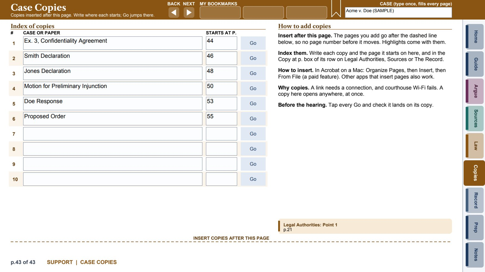
- Insert each copy after the Case Copies page. In Acrobat on a Mac: Organize Pages, then Insert, then From File (a paid Acrobat feature). Other apps that insert pages also work.
- In the index, write each copy and the page it starts on. Write the same page in the Copy at p. box of its row on Sources, Legal Authorities or The Record.
- Before the hearing, tap every Go and check it lands on its copy.
Pre-hearing Checklist and Notes
The Pre-hearing Checklist covers what to confirm before you leave for court: the time and courtroom or remote link, the time allowed, the judge's procedures, every paper and link, every citation checked, the outlines final, the proposed order, witnesses and exhibits for an evidentiary hearing, the court reporter and interpreter, the iPad, and the client. The Notes page has six sticky notes, as in the OnTrial Notebook.

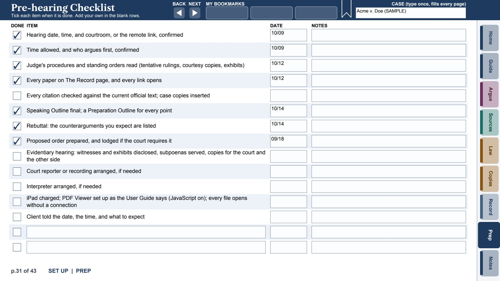
Part Four: Troubleshooting and help
- Buttons, bookmarks or sticky notes do nothing on the iPad.
- Make sure the notebook is open in PDF Viewer by Nutrient, not in Acrobat Reader for iPad, Books or the Files preview. Then open PDF Viewer's settings and make sure JavaScript is on, then close the notebook and open it again. Check that the file was never saved in Preview; if it was, start a new copy from your blank master. Plain page links (the tabs, BACK and NEXT, the index buttons) work even without JavaScript.
- The first tap takes a few seconds.
- In a large notebook, the first button that runs a script after the file opens takes a moment. After that, taps are quick.
- The top of the page is cut off, or pages scroll together.
- Use the PDF Viewer settings in Part One: Page Transition Jump, Page Mode Single, Scroll Direction Horizontal, Page Fitting Adaptive.
- The colors look brown or all one color.
- PDF Viewer is in Sepia or Night mode. Set Appearance to Default (the white button).
- A box turns yellow while I type.
- That is PDF Viewer showing which box you are typing in. The notebook cannot turn it off; it goes away when you leave the box.
- The ribbon does not turn burgundy on the iPad.
- PDF Viewer cannot color the ribbon. Your bookmark is still in the slot; the ribbon turns burgundy in Acrobat.
- Buttons do nothing on Windows.
- Open the notebook in Adobe Acrobat Reader, not in Edge or another browser.
- I see a "Modified copy" notice.
- The notebook checks itself when it opens. If its pages or parts have been changed, it shows the notice. Your entries are safe; contact support for a clean copy with your entries carried over.
- I have two versions of a case copy.
- The file was saved on two devices while it was open on both. Keep the newer one. Next time, close the file on one device before you open it on the other.
- How do I print?
- See Printing a backup copy: the print settings for Acrobat Reader and PDF Viewer, which paper size to use, and what prints. In the Professional edition, the Print button on a list page prints the whole list.
- Does the notebook send my information anywhere?
- No. What you type stays in the file on your device. The notebook does not send it to OnSide Software or anyone else. The Hearing Notebook's Open buttons go only to the addresses you paste in.
Getting help. The help assistant on onsidesoftware.com answers questions about both notebooks. For anything else, write to support@onsidesoftware.com.
The notebooks are organizing and reference tools. They are not legal advice and do not create an attorney-client relationship. Check every rule, citation and deadline against current official sources and your court's local rules. Use is governed by the OnSide Software Terms of Service, at the back of each notebook.